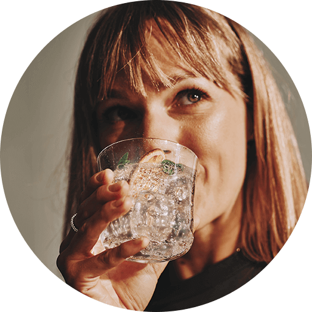

Butelka
BUTELKI FUSE FREE
BIRDS 1 L NIEBIESKA
I KORALOWA,
2-PAK
WODA GAZOWANA
ZAWSZE POD RĘKĄ
Lubisz pić świeżą wodę gazowaną przez cały dzień i chcesz mieć ją zawsze pod ręką? Poznaj nowe butelki SodaStream Fuse Free Birds z pięknym motywem barwnych ptaków! Designerskie i wygodne, jednolitrowe butelki z łatwością zmieścisz w torebce lub w plecaku. Weź je ze sobą do pracy lub na trening i ciesz się orzeźwieniem w stylowym opakowaniu.
ZADBAJ O PRZYSZŁOŚĆ ZIEMI

Używanie wielorazowych toreb na zakupy, pojemników na drugie śniadanie
i butelek na wodę to prosty sposób na budowanie eko nawyków.
Dzięki użytkownikom SodaStream tylko w zeszłym roku udało
się zastąpić butelkami wielokrotnego użytku
aż 5 000 000 000 butelek jednorazowych!
Dołącz do milionów użytkowników SodaStream, ciesz się bąbelkami i dbaj
o przyszłość Ziemi.
IDEALNA W KAŻDEJ SYTUACJI
w każdej sytuacji. Doskonale sprawdzą się do serwowania
lemoniady podczas przyjęcia w domu lub w ogrodzie. Nie
zawiodą Cię również wtedy, gdy pozostajesz w ruchu. Litrowa
butelka idealnie leży w dłoni i nawet pełna nie jest zbyt ciężka.
Dzięki niej będziesz mógł dbać o nawodnienie zawsze i wszędzie.
JAK ZROBIĆ BĄBELKI Z SODASTREAM?
1
Napełnij butelkę Fuse
Free Birds zimną wodą z kranu lub
filtrowaną.
2
Zamontuj butelkę w saturatorze zgodnie z instrukcją.
3
Naciśnij przycisk lub
dźwignię urządzenia, by uwolnić
bąbelki.
W zestawie znajdziesz dwie litrowe butelki do gazowania wody SodaStream Fuse Free Birds z nakrętkami, w kolorach koralowym i niebieskim.
ZRÓB SWÓJ ULUBIONY NAPÓJ GAZOWANY
SodaStream to nie tylko pyszna woda. W szerokiej ofercie syropów smakowych z pewnością odnajdziesz swój ulubiony napój. Kilka kropli wystarczy, żebyś mógł rozkoszować się jednym z kultowych smaków, w tym Mirindą, Pepsi i 7 Up!
#PushForBetter